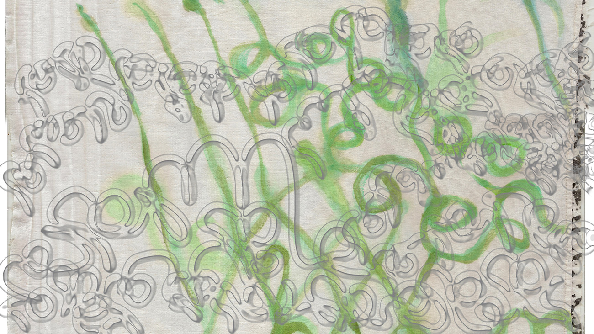

ეს ადგილი this place
სიტყვებს შორის between the words
მომწონს I like
ყველაზე მეტად the best
მტირალა მთა translates
თარგმნის sakhls
ტეხავს cool
ტყდება breaking the shapes
of outlines
of letters
I like
წვეთი იწურება ჩემს ჩონჩხში
- drops drip into my skeleton
და ამოდის პლიაჟზე - and surfaces on the beach
ხერხემალს ამაგრებს strengthens the spine
Her skirts collect damp leaves and straw
She lives so far she needs to cross some hills
of the weeping mountain to go to the club
In priceless wooden heels
She crumbles twigs and juicy leaves. Damp leaves
And brings this moisty dirt to the city. Scrambles her joints
into a walk
that gets elegant and stronger
It’s a figurine
with a split face
On my self Soaking
Many limbed
Are a community now
move one leg, twist up, Community now
Alphabet already
Others follow As a
Staccato
Bend over turn their mouth, grin,
smiles at you with the whole body
Community now
I know, a community of scribbles comes out from my
couch and dances in front of me
when I work at my desk.
I need to translate Them. They put its nose to the sand to
listen
Eyes stretching over the whole face, Writing not with a
hand, but comes to the whole body from the toe. Mouth
stretching over the whole skin
There is no more empty face left, there are limbs
ლორწო slime
ოღროჩოღრო bumpy
ყურების უკან behind ears
მუცელი ქვებზე belly on stones
კიბეზე კედელზე on the stairs on the wall
ქვესკნელზე on the abyss
წყალზე კრაზანა wasp on water
ზანზარეეებს shake shivering
ბწკენს pinches
ასოების ხელები ბწკენს letter’s limbs pinch
მარიჯანის გატეხილ გულზე broken heart
Maridjan
კუნთზე ბზარიი crack on the muscle კაკალი walnut
მოტყდა გასკდა broke off, burst
ფეთქავს pulsates
თვალი სკდება eye bursts
სახეზე იჭიმება stretches over the face
კბილის ღარი
კაკალს ტეხავს CRUSHES THE WALNUT
A crack in your wall, on your desktop
A slit of the sky
a crack on a muscle
A crooked nerve
A cleft in your teeth somehow. That is who you
are
Things come from my feet That is how I am a conduit
The walnut broke off and exploded Letters into
ripples
exploded my desk under the walnut, her desk
over Alexanderplatz
Go out, look around
Only if people knew how I do it, I google
synonyms and then say it out loud
many times and pick up words that I like with
their sounds. So unprofessional
I am not a linguist
She is a walnut seller
That’s her main job
That never became a profession
She is writing mainly about what she is selling
as she doesn’t know much more things
She knows, Chicken, dogs, she knows work,
she knows geese
she knows nuts
She likes to sell little objects
Of course I don’t have all these words in my
head or inside of me.
They are outside and I go shopping for them
like in a supermarket.
Words aren’t a produce
Words aren’t a produce პოემა POEMA
A poem
ლექსი LEQSI
Luxus Luxurious
Lassi Flexing
Rhyme
No, a poem
რითმა RITHMA
Flexible, Rhyming
Poetry luxurious
გაგვახელებს GAGVAKHELEBS Rupture,
Crazy hands Breaking
ხელები KHELEBI
ხლეჩს KHLECHS Slit
Crazing
Your body in the mountain Crazing
Sends us into a frenzy, sugar, sun
Crazy from the sun
მზე, Shakari გაგვახელებს MZE GAGVAKHELEBS
Sun breaks the daylight
Rupture on the beach
Word Rupture is breaking something From pleasure
It is a synonym for a crack, it is a rip off
I read somewhere that a translator is also an artist and
then I am so daring since then
I recklessly choose words, because I don’t have to make
sense to you
You see my face
mostly,
I always see my hands,
Limbs is all I have
And I mean something
I mean i really mean it my shapes
My eyes run down the letters
I am shocked
by my fingers grip, fists
Swallow the paper
Unknowingly I am hurting the book, with my limb
Squeezing to meld
ndoba, melting
შენ არ ყოფილხარ
პირველი სატრფო the first Lover
Not the first
Smooshed
Crush
The scream
Creamy date
her crush
it is a crushed candy in your teeth,
annoying,
nice
წაგიღია, კვნესა გაირყვნები Defiled
filth dirt
ხასა ქუჩა
Dirty
Filth
street
crolls over
ფული
ხურდა ხასა
The first coin მაზანდა ზანზარებს
Set price
The establishment ზანზარებს
A coin To pay
A service to give
This could be a response
It is just a thought bubble with no words in it.
It is about the shape of the thought bubble
so cute
They bump into each other Rub And float
And rub us
Like with ur lover in the water
A crusty sheet On crumpled soil
between your word and my wordthere is that creature
კაკალი აზანზარდა kakali azanzarda
ძარღვმა მიწა გახეთქა gakhetqa gatexa,
Tvali tans
მიდის მტირალას midis mtiralas
ტირილის გავლით TIRILIT
ჩადის გასაყიდად to sell
დამატებით სერვისად SERVISAD
ფეხით ხლეჩს კაკალს KHLECHS KAKALS
ნედლი KHLECHS NEDLI
The raw material
მასალა, Masala
The uncooked word ნედლი, Nedli
The cooking
my limbs
Happen so, a sediment Of hug. There is a cliff
of hanging words,
no foundation, are heavy granites,
It was already cracked in the mountain
there is a fissure, that is who I am, that is what
i’m interested in
Elements boiled and frozen
making Communities and splitting
it’s your lunchtime
walk
u hold on ur shoes, u hold on ur sushi
you squint on partition beton and grass
you touch with your foot
you start to drift
it comes from the green
stuff starts to sip in your head
it starts from the foot
you start to loose molecular boundaries and swallows your thoughts
it says ‘’Drop it’’!
and it
TTRROOLLLSSS your brain
foot fractures the light
plant dust swirls around your body and starts to chew on digest your leg into the green dust into a glaring murk
smells like a cut grass, lemon tree, pkhali its a Trannsss it
and swallows your thoughts together with your sushi ur handbag ur keys ur notebook
Now all of you are a foggy mush!
It comes swiftly, its ambush can be a little dot on a praying
mantis
or it rushes out of a swamp, or your green salad
flick, bite and swallow succession of spikes
sliminess of the tongue muscle whisk
It is not a crocodile
It is TRROllsss ur leg,
and reaches ur nipples headed to the head
colonizes ur brain, more
you fear you can never go back to ur work
‘’drop ur work’’
you scared you will be out of it forever
you can never go back
feet on the grass
Insects chew on your skin
It starts from the foot your foot drifts you away
‘’Drop it’’ Your books
Hold on
to your feet
It is just a thought bubble with no words in it. It is about the
shape of the thought bubble
so cute
They bump into each other Rub And float
And rub us
Like with ur lover in the water
A crusty sheet On crumpled soil
I bump my head up on this root
I do want to have a strong backbone
კაკალს ტეხავს CRUSHES THE WALNUT
Crazing
I cut sentences, words and look between them
I just slit and stitch on my laptop
I can’t sleep without a laptop open in front of me. Benevo-
lence of this shape
I think it’s rude to just disappear
I want it to know why I am absent So it sees I
sleep in front of it
I think I owe it something
I also have so much respect for the job it does for me,
It keeps all my words
I think it should get paid from my salary
With the night She wants to rush things, takes
ketonal wants to go out at night,
her favorite panties are in the washer and
everything is ruined
The night
She has been preparing herself for hours.
Nerves,
everything is Ruined
Its brokeeeen Ruiiiined its broken ნერვი
აღარ არის .... ფეხის გულზე გაწყდა
აღარაა
Nerve is torn on the sole, Gone
its gone, Agharaaa,
ნერვი გაწყდა გულზეეე, nervi gawyda
gulze
its gone
agharaa
popped up root on your playground
On your hand
On your forehead
A slapping nerve on the pavement
On the shell
A translator in a crevice
On the cliff
Another creature of a language
Melding transmixing of e,v,e,r,ything, thought
bubbles hugging.
Weeping Mountain airport, a Transit, conduit
that is not a space yet…that is a creature in
forming, a tongue that is disappearing.
A body that is crazing. A bubble with a crack
for the leaf.
A mouth that is a scribble.
it’s a wooden heel
it was a wooden heel that made crevice over
the mountain to the sea
ceviche
you like
My desk is under the walnut
Her desk is over Alexanderplatz
my soles
they crumble the earth
heels craze, crazing heels
mark the wet soil
they crumble themselves too, soles
walnut cracker, symbolic nut
the root of your tooth comes out on my
playground
then I remember our words scattered around the internet
I want to blow them back into my limbs and swallow
I want to eat the screen, eat the hard drive
I want to carry our books on my chest
And store the words into walnut shells
My eyes run through little shapes, some words catch me
and do not let go, I like them too much to let go. Let’s
have a moment together, cuddle. What can I do with you,
how can I touch you.
If it is a paper phone or a book, I hug it in my chest.what
to do if this is a thought?
What can I do with you, I like you too much, and I can’t
get enough staring at your negative outlines. How can I
sculpt my liking in the moment, how can I talk about this
when they are not anything specific they drift and smash my
bone scaffold
I see her wooden house
from this tree
I have an extra limb for hanging, I hang out here
Cracks she wrote
If she looked outside there are cracks all around her
actually this part of the world is a crack
Tectonic plates have changed their outlines and seas and
mountains and her yard too, There is a broken mountain
laying next to her house. A chunk of mountain and plus
trees are like crooked veins they have been through wild
fires and storms and fires
And the ground is all crumbled
I like that she was painting with sticks and jam On back-
sides of chocolate boxes
And that is the high art
It makes sense
In her town there was this acclaimed writer She went to
his reading once
Now she is the artist in the town People go to this town to
meet her
I guess this is how it was before the 20th century
U don’t have many chances, live fast die young
U have only one chance
If you’re not lucky nobody cares. no one will read you, no
one will see you U will grow up quickly u either meet the
right people or not then you die
Enjoy
You are my favourite crevice,
your negative lines are so beautiful
There are earth drought crisps
Not a black powder
But washed away and kind of dried
potato crisps
It crumbles with ur heels
I like it
There is a crack on my building block it is a
promise to split the house into separate
gravitational petals
magnolias
But for now there are some little bugs living in
it, with tiny plants, these miniature things may
explode in size when this house opens up a
flower Huge scribbles will burst out
I think insects also like cracks their negative
homes
The outline of the word, the edge of
it Peels its shell off
Drops the Naked thigh
my limbs
Happen so, a sediment Of hug
It is a speech bubble without words in it
a space for hugs
from the outline of ur letter till the edge of mine
I lose my vertebrate and become a limbed jelly
many limbs there is no head
some shapes for touching only
Jelly limbs
My limbs are a conduit and I know translation
can be my hugging. These negative shapes
between my body and your shapes are
the cracks I was talking about, I am interested in.
This is what I want to fix and look at.
Translation is the way to touch you to digest
you and move on. I have fixed the moment of
the liking and I can move on.
I can remember
You are my favourite crack
my crush
my crushed candy mouth
საუკეთესო ბზარი შენობაზე
even on my building
in my backyard even
the best crevice
in my eye too
შუბლს შორის on my forehead root
ნახატივით as a drawing
Nakhativit as a scribble
from that mountain
from cartoonist
with the lights on its shore
to the wooden house that is crushed
my favourite crush
2021